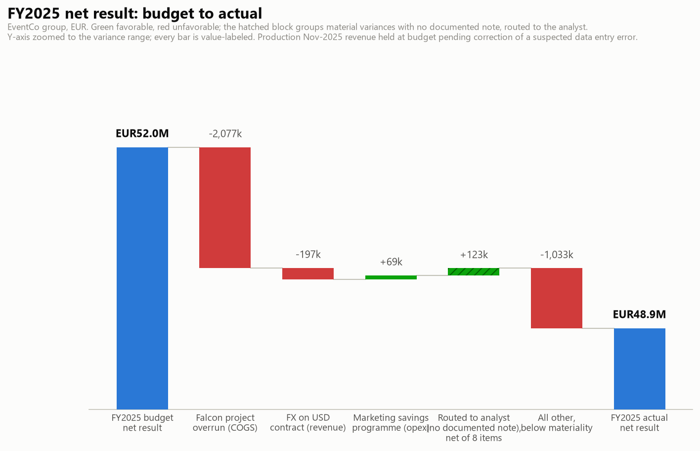
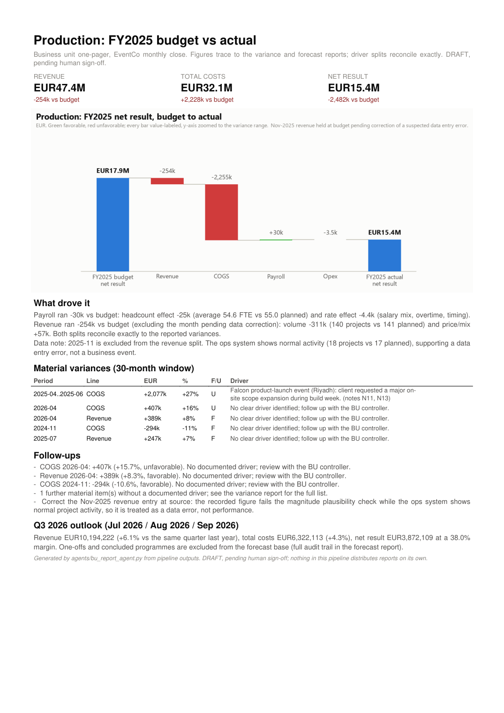

This demo shows how I apply my data and AI toolkit to the FP&A work I know best: closing the month and reporting on it. The company is EventCo, a fictional events agency I built a full dataset for: EUR100M of annual revenue, four business lines, thirty months of budget, actuals and prior year, with the usual real-world mess left in on purpose. From one command I get the reports a finance team actually produces each month: the variance analysis, a refreshed quarterly forecast, the executive summary, and a one-pager for each business line. My judgment stays where it belongs: I explain what the data alone can't, and I sign before anything goes out.
On the left, the export I start from, with the problems every finance team will recognize. On the right, what lands on the CFO's desk a few minutes later.
Five real rows from the demo file. I planted every one of these problems deliberately, because I have met every one of them in real closes.
| month | business_unit | revenue_budget | revenue_actual | payroll_budget |
|---|---|---|---|---|
| 2024/08 | Production | 2302070.569481089 | 2309849.1588302534 | 270456.745733044 |
| 2024-12-01 | Producton | 4276001.483833633 | 4309897.281548161 | 273134.709455636 |
| May 2025 | Production | 4939152.093623364 | 4792422.243743062 | 276,519 EUR |
| November 2025 | Production | 5238445.244445545 | 52243583.97067126 | 280636.6251137856 |
| April 2026 | Digitial | 2616866.7941705612 | 2687265.017168981 | 256504.50514775925 |
| April 2026 | Digitial | 2616866.7941705612 | 2687265.017168981 | 256504.50514775925 |
The opening of the executive summary, word for word:
"Three stories dominate the variances over the 30 months under review: a EUR2.08 million cost overrun on a single client project, an unfavorable currency swing on an international contract, and a cost-savings programme that ran ahead of plan. Of the twenty variances large enough to warrant comment, four are corroborated by documented business notes, fourteen carry the FP&A analyst's own commentary after follow-up, and two remain open." From the executive summary. Read it in full.

The full-year walk from budget to actual, reconciled to the euro. Named drivers are solid; the hatched block is what the data alone could not explain and came to me instead.
This is the part I care most about getting right. AI in finance is only useful if you can always tell what the machine found, what a human decided, and what nobody knows yet.
SystemIt cleans the export: dates, names, duplicates, amounts typed as text. Every fix is listed in a data quality report; nothing is changed silently.
SystemIt checks all 840 budget lines and keeps only the gaps big enough to matter: twenty, in this close.
SystemIt matches each gap against the dated notes the business wrote during the period. Four of the twenty had a documented cause; those get cited, with their source.
MeThe other sixteen come to me as a follow-up list. I investigate with the business lines and write the explanation myself; my commentary goes back in through its own input file, and the pack labels each of those rows "analyst input" with a name and a date. Fourteen are now explained that way. Two are still open, and the pack says so instead of papering over them.
SystemIt rebuilds the next quarter's forecast on a cleaned history, keeping one-off events out of the base so an accident never becomes a trend.
MeAI drafts the commentary and the per-line one-pagers from the finished analysis, with a hard rule: it may only reword what has already been computed and labeled, never add a number or a cause. Then everything waits for my review and signature. There is no send button.
That figure sat in the November revenue column of the export. The business line's normal month is around EUR5 million, and its costs and payroll did not move. A rushed close builds a growth story around a number like that, and it looks great right up until someone checks. Here, the system flagged it as a probable data entry error, kept it out of every calculation and every sentence of commentary, and put it on my list for correction at source. The operations data backed the call: 18 projects delivered that month, against 17 planned. A typo stayed a typo, and the report says so.
Group reporting is half the job. The other half is giving each business line a view it can act on, and in my experience that is what falls off the table when the close runs late. So the close produces it automatically.

Each page shows where the year stands against budget, what drove payroll (headcount or pay rates) and revenue (how many projects, at what value), which gaps are explained and by whom, what is still open, and what next quarter looks like.
Production's page, for example, splits its payroll gap into a headcount effect (an average 54.6 people against 55 planned) plus a small rate effect, and its revenue gap into 140 projects delivered against 141 planned plus a price effect. That is the level where a conversation with a manager actually starts.
Nothing here is a mockup. These are the documents the close produced, exactly as generated, one click away.
The two-page story of the close: headline variances, analyst commentary, open items, outlook.
Read itEverything assembled in one document, ending on the review and sign-off block.
Read itAll twenty material variances with their explanation and its source: documented note, analyst input, or still open.
Read itNext quarter by business line, with the full audit trail of what was excluded from the base and why.
Read itEvery fix applied to the raw export, listed one by one, including the EUR52M flag.
Read itThe checks that run before I even look: figures traced, boundaries verified, consistency confirmed.
Read itThe mechanical part runs in minutes, identically every month. The time goes into explaining the two open items, not into reformatting dates.
Every cause in the pack is documented, signed by the analyst, or explicitly open. In a board meeting, that difference matters.
Same input, same numbers, every time. The AI step is fenced to writing prose from finished analysis, and that fence is checked on every run.
Only one step talks to an AI service, and it only ever receives aggregated summaries. The raw ledger never leaves the machine.
EventCo is fictional, but its monthly close is not. I ran this cycle for real at a EUR100M events agency, including stepping in to close the books when the finance director was out. The overruns, the currency hits and the fat-fingered digits planted in this dataset are the ones that actually happen. I built this to show what the close looks like when software does the repetitive part and a human keeps the final word.
If you're wondering what this would look like on your numbers, or your clients', I'm happy to walk you through it. Twenty minutes, my screen, your questions.